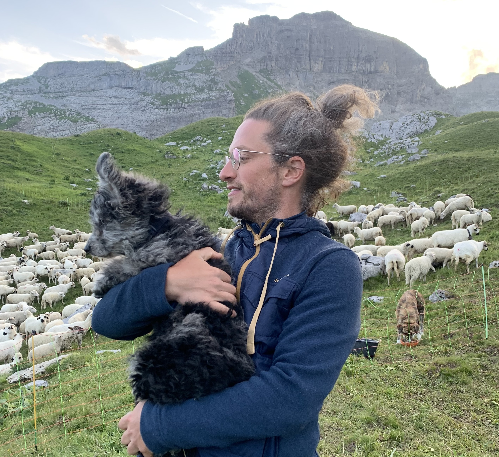
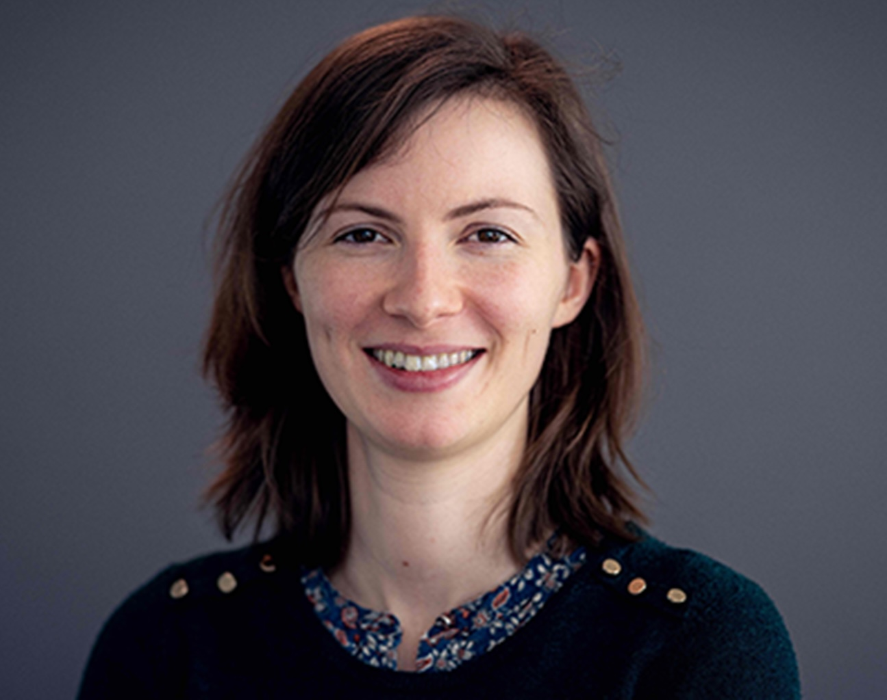
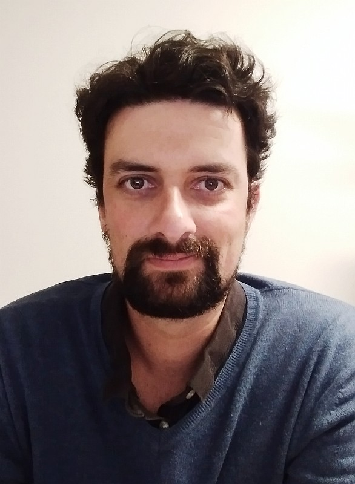

NLP resources and applications for Early Modern French
FreEM corpora is a project dedicated to Early Modern French (16th–18th centuries). It provides corpora and NLP models for several core tasks, including lemmatisation, part-of-speech tagging, linguistic normalisation, and named entity recognition.
The project brings together specialists in NLP and philology in order to deliver accurate linguistic modelling, large-scale annotated corpora, state-of-the-art models, and linguistic studies of Early Modern French.
All corpora are freely available.
The FreEMLPM ("Lemmas, Parts of speech, Morphology") dataset provides training data for:
Training data comes from several projects:
Text normalisation is crucial for processing noisy or non-orthographic text. Our system handles various normalisation challenges including spelling variants and abbreviations.
FreEMnorm consists of two parallel corpus covering a range of different genres of text throughout different centuries (16th-20th c.).
Training data comes from several projects:
Our NER system identifies and classifies named entities in text with high accuracy. The system recognizes persons, organizations, locations, and other entity types across multiple domains and centuries.
Training data comes from this project:

Philology, linguistics
University of Geneva
Philology
Inria Paris
Philology
University of Geneva
NLP
Inria Paris
NLP
Inria Paris

NLP
Inria Paris
NLP
Inria Paris

Computer science
Université Gustave Eiffel
Research Engineer
Sorbonne Université
The 17th c. is crucial for the French language, as it sees the creation of a strict orthographic norm that largely persists to this day. Despite its significance, the history of spelling systems remains however an overlooked area in linguistics for two reasons. On the one hand, spelling is made up of microchanges which requires a quantitative approach, and on the other hand, no corpus is available due to the interventions of editors in almost all the texts already available. In this paper, we therefore propose a new corpus allowing such a study, as well as the extraction and analysis tools necessary for our research. By comparing the text extracted with OCR and a version automatically aligned with contemporary French spelling, we extract the variant zones, we categorise these variants, and we study their frequency to study the (ortho)graphic change during the 17th century.
The use of contemporary spelling rather than old graphic systems in the vast majority of current editions of 17th century French texts has the unfortunate effect of masking their graphematic richness. Such valuable information has remained concealed and therefore under-exploited, despite the potential it holds in terms of analysis. By favouring a practical corpus-based approach, rather than a theoretical one, and by relying on a recategorisation of the various competing systems at that time in French scriptae, we propose the foundations of a scriptometric study of the classical language, focusing on the analysis of specific documents, both manuscripts and old prints.
Named entity recognition has become an increasingly useful tool for digital humanities research, specially when it comes to historical texts. However, historical texts pose a wide range of challenges to both named entity recognition and natural language processing in general that are still difficult to address even with modern neural methods. In this article we focus in named entity recognition for historical French, and in particular for Early Modern French (16th-18 th c.), i.e. Ancien Régime French. However, instead of developing a specialised architecture to tackle the particularities of this state of language, we opt for a data-driven approach by developing a new corpus with fine-grained entity annotation, covering three centuries of literature corresponding to the early modern period; we try to annotate as much data as possible producing a corpus that is many times bigger than the most popular NER evaluation corpora for both Contemporary English and French. We then fine-tune existing state-of-the-art architectures for Early Modern and Contemporary French, obtaining results that are on par with those of the current state-of-the-art NER systems for Contemporary English. Both the corpus and the fine-tuned models are released.
Linguistic change in 17th c. France: new scriptometric approaches The end of the 17th c. remains a blind spot of the research on the spelling system, despite its importance for French at this period, during which a strict norm, still (more or less) in place, was created and imposed. Focusing on a practical rather than a theoretical approach, we propose to lay the foundation for a computational scriptometric study of early modern French and analyse the evolution of the spelling system over the 17th c. To do so, we measure and evaluate the distance between the early modern and the contemporary versions of the language, thanks to two automatic normalisers: one rule-based and another one neural-based.
Spelling normalisation is a useful step in the study and analysis of historical language texts, whether it is manual analysis by experts or automatic analysis using downstream natural language processing (NLP) tools. Not only does it help to homogenise the variable spelling that often exists in historical texts, but it also facilitates the use of off-the-shelf contemporary NLP tools, if contemporary spelling conventions are used for normalisation. We present FREEMnorm, a new benchmark for the normalisation of Early Modern French (from the 17th century) into contemporary French and provide a thorough comparison of three different normalisation methods: ABA, an alignment-based approach and MT-approaches, (both statistical and neural), including extensive parameter searching, which is often missing in the normalisation literature.
Language models for historical states of language are becoming increasingly important to allow the optimal digitisation and analysis of old textual sources. Because these historical states are at the same time more complex to process and more scarce in the corpora available, specific efforts are necessary to train natural language processing (NLP) tools adapted to the data. In this paper, we present our efforts to develop NLP tools for Early Modern French (historical French from the 16th to the 18th centuries). We present the FreEMmax corpus of Early Modern French and D'AlemBERT, a RoBERTa-based language model trained on FreEMmax. We evaluate the usefulness of D'AlemBERT by fine-tuning it on a part-of-speech tagging task, outperforming previous work on the test set. Importantly, we find evidence for the transfer learning capacity of the language model, since its performance on lesser-resourced time periods appears to have been boosted by the more resourced ones. We release D'AlemBERT and the open-sourced subpart of the FreEMmax corpus.
Despite their undoubted quality, the resources and tools available for the analysis of Ancien Régime French are no longer able to meet the challenges of research in linguistics and literature for this period. After having precisely defined the chronological framework, we present the corpora made available and the results obtained with them for several NLP tasks, fundamental to the study of language and literature.
This paper describes the process of building an annotated corpus and training models for classical French literature, with a focus on theatre, and particularly comedies in verse. It was originally developed as a preliminary step to the stylometric analyses presented in Cafiero and Camps [2019]. The use of a recent lemmatiser based on neural networks and a CRF tagger allows to achieve accuracies beyond the current state-of-the art on the in-domain test, and proves to be robust during out-of-domain tests, i.e. up to 20th c.novels.
Linguistic annotation benefits from ISO specifications such as the Morphosyntactic Annotation Framework (MAF), whose recommendations have been added to the TEI P5. Relying on feature structures, these recommendations have however not been fully integrated into the TEI stand-off annotation model and, for instance, it is currently impossible to encode feature structures within the listAnnotation and annotationBlock elements.
With the development of big corpora of various periods, it becomes crucial to standardise linguistic annotation (e.g. lemmas, POS tags, morphological annotation) to increase the interoperability of the data produced, despite diachronic variations. In the present paper, we describe both methodologically (by proposing annotation principles) and technically (by creating the required training data and the relevant models) the production of a linguistic tagger for (early) modern French (16-18th c.), taking as much as possible into account already existing standards for contemporary and, especially, medieval French.
The study of old state of languages is facing a double problem : on the one hand the distance with contemporary spelling prevents scholars from using standard NLP solutions, on the other hand the instability of the scriptae complexifies the training of solutions directly on the original source text. Returning to this problem with a DH perspective, we start with the philological reasoning behind the creation of the training corpus, and use traditional NLP methods to compare two machine translation systems (statistical and neural) and offer a functional tool for the normalisation of 17th c. French answering the needs of philologists.
If Neural machine tranaslation (NMT) has proven to be the most efficient solution for normalising pre-orthographic texts, the amount of training data required remains an obstacle. In this paper, we address for the first time the case of normalising modern French and we propose a workflow to create the parallel corpus that an NMT solution requires.
Corpora annotated in lemmas, POS, morphology and named entities.
Parallel corpus for linguistic normalisation.
Corpus of historical texts for LLM training. A non-open version exists but cannot be distributed.
This model is a RoBERTa base model pre-trained on the FreEMmax corpus for Early Modern French. This model is Cased and was trained with a mix of normalized and unnormalized data.
Email: simon.gabay@unige.ch
Address: Humanités numériques, Université de Genève, Geneva, Switzerland.
For inquiries about collaboration, data access, or other questions, please reach out via email.